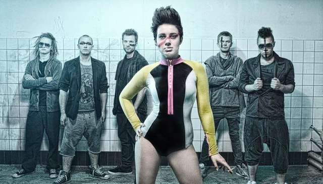
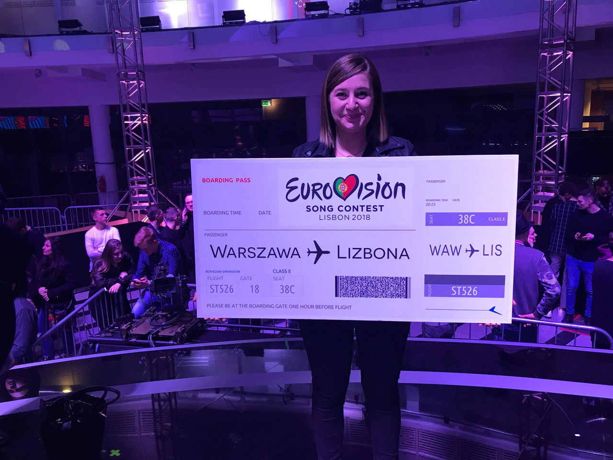
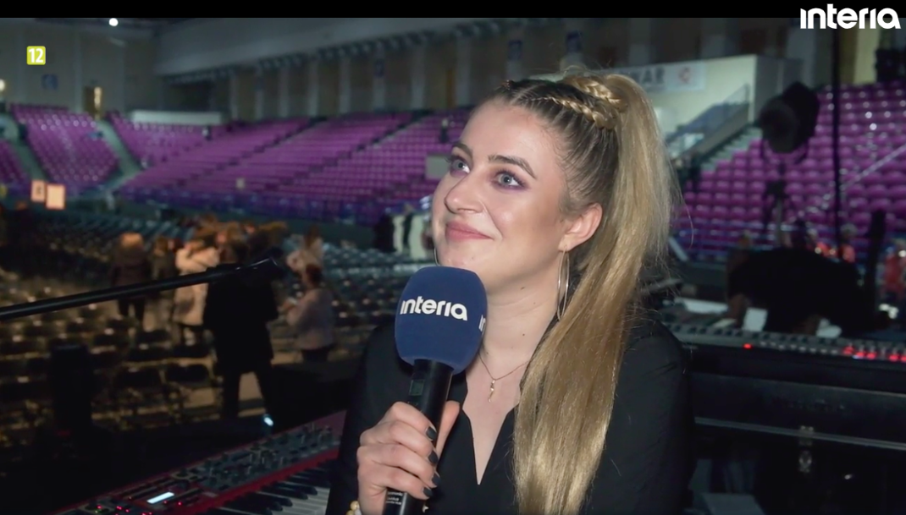
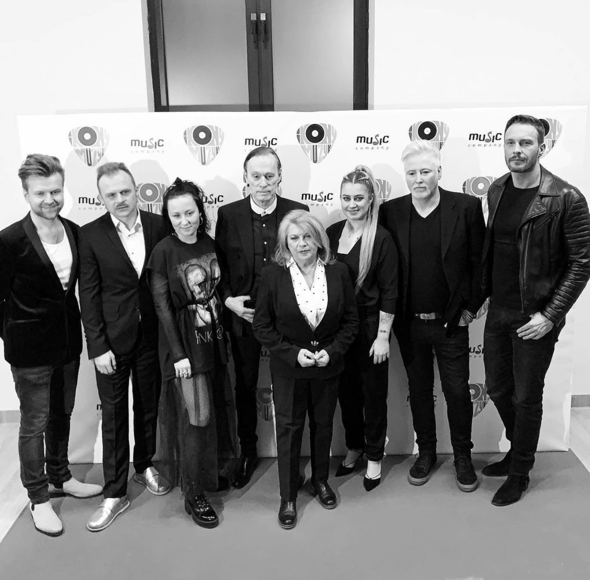
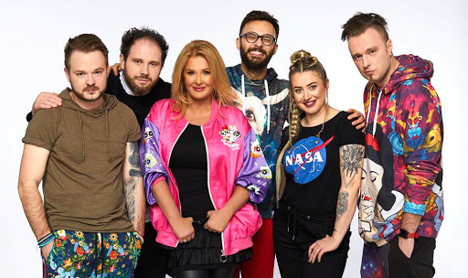
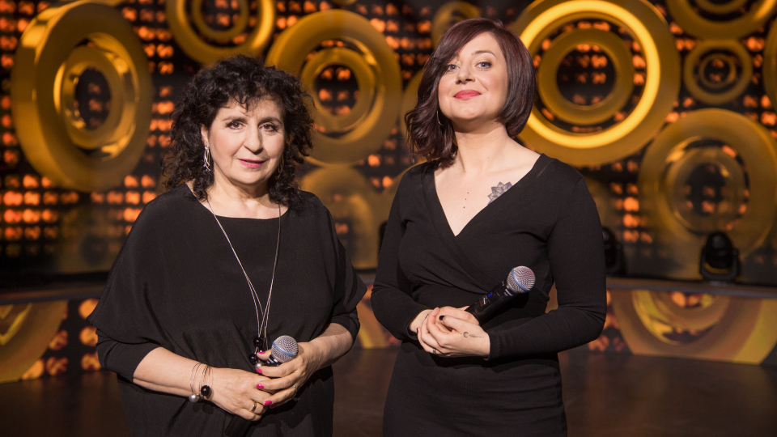
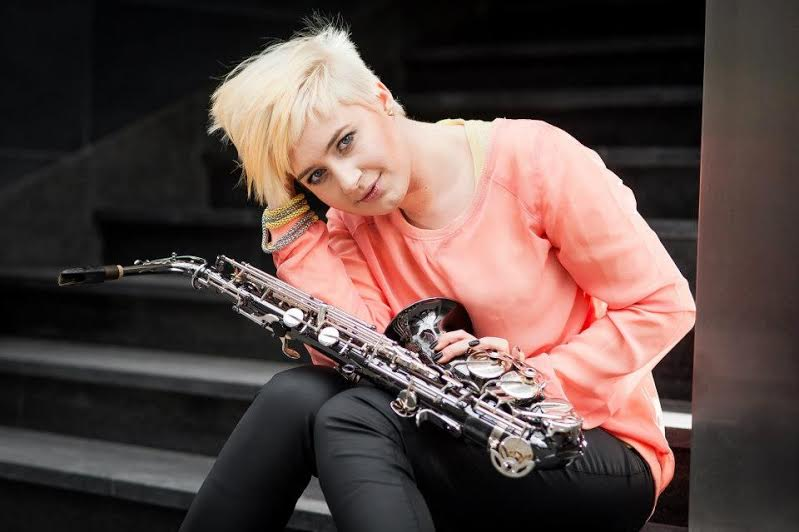

Urodziłam się 22.01.1990 w Poznaniu, obecnie mieszkam w Warszawie. Komponuję i produkuję muzykę od 2008 roku. Nagrałam 3 solowe płyty oraz kilkadziesiąt jako muzyk akompaniujący, producent i chórzystka. Gram na saksofonie, skrzypcach, instrumentach klawiszowych, gitarze basowej, ukulele, instrumentach perkusyjnych. Śpiewam.


Tworzę muzykę elektroniczną pod pseudonimem Dj Little Zebra. Prowadzę kolektyw muzyczny Slavic Jazz Undeground, łączący muzykę słowiańską ze współczesną muzyką rozrywkową, oceniany przez recenzentów jako rewolucyjny projekt muzyczny (Wyborcza, Polskie Radio, Polityka, TOKFM).

Często kooperuję artystycznie. Mam za sobą współpracę koncertową / studyjną z Leszkiem Biolikiem, Majką Jeżowską, Pablopavo, Vavamuffin, Kamilem Bednarkiem, Wojtkiem Pilichowskim, Tabu, Januszem Radkiem, Justyną Steczkowską, Kayah, Grzegorzem Hyżym, Piaskiem, Kasią Moś, Kasią Cerekwicką, Pauliną Przybysz, Stanisławem Sojką, Sławkiem Uniatowskim, Piotrem Roguckim, Krystyną Prońko.


Stworzyłam oprawę muzyczną na galę rozdania Nagrody Literackiej NIKE w 2016 roku transmitowaną na żywo w TVN24. Jestem laureatką "Szansy na Sukces" z Eleni oraz finalistką "Mam Talent".

W wieku 19 lat jako pierwsza kobieta w historii wygrałam główną nagrodę na Międzynarodowym Konkursie Jazz Juniors będąc liderem i kompozytorem utworów zespołu Lena Romul Quintet. Studiowałam Jazz na Akademii Muzycznej we Wrocławiu oraz w Studium Policealnym w Warszawie. Obecnie studiuję Muzykoterapię na Akademii Muzycznej w Łodzi. Jestem nauczycielem muzyki w klasach podstawowych. Byłam stypendystką Ministerstwa Kultury i Edukacji Narodowej. Stworzyłam Kurs Online uczący komponowania w duchu DIY „Muzyka - Twórz Samodzielnie”.

Na potrzeby własnych projektów artystycznych komponuję, nagrywam, montuje wideo, tworzę grafiki i strony internetowe. Tworzę autorskie programy nauczania muzycznego. W wolnym czasie zmieniam się w amatorską twórczynię rękodzieła oraz uczę jogi indywidualnie (posiadam certyfikat instruktora). Stworzyłam projekt „Melodia Yoga”, który łączy praktykę jogi z muzyką na żywo.